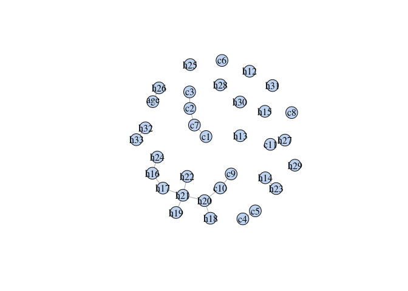
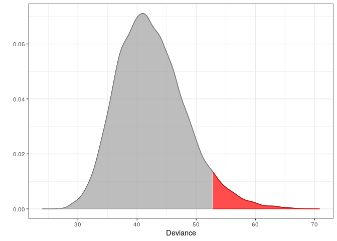
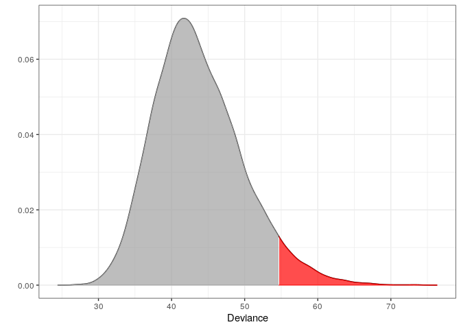

About molic
An R package to perform outlier detection in contingency tables (i.e. categorical data) using decomposable graphical models (DGMs); models for which the underlying association between all variables can be depicted by an undirected graph. molic also offers algorithms for fitting undirected decomposable graphs. Compute-intensive procedures are implemented using Rcpp/C++ for better run-time performance.
Installation
You can install the current stable release of the package by using the devtools package:
devtools::install_github("mlindsk/molic", build_vignettes = FALSE)
Getting Started
See the following:
- The Outlier Model: The “behind the scenes” of the model.
- Detecting Skin Diseases: An example of using the outlier model to detect skin diseases.
- Outlier Detection in Genetic Data: An example of how to conduct an outlier analysis in genetic data.
The following examples are from the documentation of fit_outlier.
Psoriasis patients
Fitting the interaction graph

This plot shows how the variables are ‘associated’ in the psoriasis class; see ess for more information about fit_graph. The outlier model exploits this knowledge instead of assuming independence between all variables (which would clearly be a wrong assumption looking at the graph). The graph may look very different for other classes than psoriasis.
Example 1 - Testing which observations within the psoriasis class are outliers
m1 <- fit_outlier(d, g) print(m1) #> #> -------------------------------- #> Simulations: 10000 #> Variables: 34 #> Observations: 111 #> Estimated mean: 42.58 #> Estimated variance: 34.51 #> -------------------------------- #> Critical value: 53.24268 #> Alpha: 0.05 #> <outlier, outlier_model, list> #> -------------------------------- outs <- outliers(m1, d) douts <- d[which(outs), ] douts #> # A tibble: 8 x 34 #> c1 c2 c3 c4 c5 c6 c7 c8 c9 c10 c11 h12 h13 #> <chr> <chr> <chr> <chr> <chr> <chr> <chr> <chr> <chr> <chr> <chr> <chr> <chr> #> 1 2 1 2 2 2 0 0 0 0 0 0 0 1 #> 2 2 2 2 3 3 0 0 0 0 2 0 0 1 #> 3 3 3 2 2 1 0 0 0 0 1 0 0 2 #> 4 1 1 1 1 1 0 0 0 1 1 0 0 0 #> 5 3 2 1 2 2 0 0 0 2 2 0 0 0 #> 6 1 1 1 1 1 0 0 0 2 2 0 0 0 #> 7 2 3 1 2 1 0 0 0 0 0 0 0 0 #> 8 3 2 3 0 0 0 0 0 3 0 0 0 0 #> # … with 21 more variables: h14 <chr>, h15 <chr>, h16 <chr>, h17 <chr>, #> # h18 <chr>, h19 <chr>, h20 <chr>, h21 <chr>, h22 <chr>, h23 <chr>, #> # h24 <chr>, h25 <chr>, h26 <chr>, h27 <chr>, h28 <chr>, h29 <chr>, #> # h30 <chr>, h31 <chr>, h32 <chr>, h33 <chr>, age <chr>
Notice that m1 is of class ‘outlier’. This means, that the procedure has tested which observations within the data are outliers. This method is most often just referred to as outlier detection. The following plot is the distribution of the test statistic. Think of a simple t-test, where the distribution of the test statistic is a t-distribution. In order to conclude on the hypothesis, one finds the critical value and verify if the test statistic is greater or less than this.
plot(m1)

Retrieving the test statistic for the individual observations:
x1 <- douts[1, ] %>% unlist() x2 <- d[1, ] %>% unlist() dev1 <- deviance(m1, x1) # falls within the critical region in the plot (the red area) dev2 <- deviance(m1, x2) # falls within the acceptable region in the plot dev1 #> [1] 58.97452 dev2 #> [1] 51.05233
Retrieving the p-values:
Example 2 - Testing if a new observation is an outlier
An observation from class “chronic dermatitis”:
Test if z is an outlier in class “psoriasis”:
m2 <- fit_outlier(d, g, z) print(m2) #> #> -------------------------------- #> Simulations: 10000 #> Variables: 34 #> Observations: 112 #> Estimated mean: 43.66 #> Estimated variance: 36.86 #> -------------------------------- #> Critical value: 54.64489 #> Deviance: 77.92978 #> P-value: 0 #> Alpha: 0.05 #> <novelty, outlier_model, list> #> -------------------------------- plot(m2) # The vertical dotted line indicates the (deviance) test statistic of z

Notice that m2 is of class ‘novelty’. The term novelty detection is sometimes used in the litterature when the goal is to verify if a new unseen observation is an outlier in a homogeneous dataset. Retrieving the test statistic and p-value for z
How To Cite
If you want to cite the outlier method please use
@article{lindskououtlier,
title={Outlier Detection in Contingency Tables Using Decomposable Graphical Models},
author={Lindskou, Mads and Svante Eriksen, Poul and Tvedebrink, Torben},
journal={Scandinavian Journal of Statistics},
publisher={Wiley Online Library},
doi={10.1111/sjos.12407},
year={2019}
}If you want to cite the molic package please use
@software{lindskoumolic,
author = {Mads Lindskou},
title = {{molic: An R package for multivariate outlier
detection in contingency tables}},
month = oct,
year = 2019,
publisher = {Journal of Open Source Software},
doi = {10.21105/joss.01665},
url = {https://doi.org/10.21105/joss.01665}
}